All right. Time for another Incrediblecoasters Trip. Now, this is a smaller trip than we normally do, since this trip is only 4 days while others will tend to be between 1-3 weeks. But this trip was again, sort of a last minute decision. As you know, my main goal for my next major trip is Japan, and I'm still in financial lockdown for that. I knew I couldn't get there in 2016 (Aiming for 2017 now). But I really didn't want to have 2016 be the first year without some sort of trip for Incrediblecoasters. I knew that the Deep South was pretty much the one part of the United States I had still yet to hit, and I could pull it off at a dirt cheap price (considering how I'm still in financial lockdown, this was CRUCIAL), plus with all the new stuff opening, including Lightning Rod at Dollywood, I just went for it and did the Deep South for 2016. And I don't regret anything as this trip was awesome. I hit some great parks and finally did the one part of the U.S I had never done before. =)
All right. We landed in Atlanta, we've got some time to kill. I know! Let's go credit whoring! =)
Hey. Pay for parking, and I get a couple free tickets. Normally, this wouldn't mean anything, but that's almost enough tickets for me to get the credit here! =)
Clearly you can see just how busy Dixieland FunPark is.
Oh wait. They changed the name. Now this place is called Fun Junction U.S.A.
Yeah. This place was dead. So dead that the girl working the ticket counter was actually asleep when we came to buy the tickets for the coaster. She woke up, and told us about how we were the first people that she had seen all day and we shared a laugh about it. Kind of reminds me of being back at P2 while working at Roaring Rapids. Except there, I at least had boats to watch.
Enough of that. Let's ride the coaster.
Yeah, Screamin' Eagle is one of those Miler Hi-Milers, which is the same kind of coaster as the Scandia Screamer. YAY!!! I LOVE THAT RIDE!!! =)
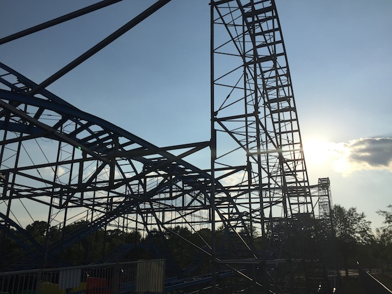
While sadly, it wasn't quite as good as the Scandia Screamer, it was still better than almost all other credit whoring coasters out there. Not saying too much, but I liked this ride.
Seriously, there's actually some laterals and ejector air on this tiny little coaster.
So yeah. That's Fun Junction U.S.A. The whole park as a whole kind of reminds me of Bowcraft Playland, only with a much better coaster. But yeah. Probably will never come back. But I'm happy I rode Screamin' Eagle and was happy to be at this credit whoring spot for 10 minutes, because for a credit whoring coaster, Screamin Eagle is definetly one of the better ones.
Bye Atlanta. We'll be back in a couple days.
And I'm assuming that there was a car accident because for a brief period of time, the middle of nowhere South Carolina was backed up like the 405 in rush hour traffic. Seriously, our GPS told us to get off the freeway and just drive through some scary local roads just to avoid the traffic because going those 5 miles on local roads wound up saving us according to Google Maps, 30 freaking minutes.
And if you're in the South, you have to stop on by a Bojangles. It's kind of like Chick-Fil A, only more Southern, and with more biscuits. It's really freaking good.
YAY!!! We made it to the first major park of the trip, Carowinds. One of the few Cedar Fair parks I had yet to hit. =)
All right. First things first, let's get the capacity nightmare out of the way, Nighthawk.
Now Nighthawk is actually Stealth, which was originally at California's Great America. But that was removed years before I was able to take my first visit. So I missed it. Well now I'm at Carowinds, and I'm finally taking that ride on Stealth I wanted.
Now I really enjoyed Firehawk @ Kings Island when I rode that and really liked the Vekoma Flyers. So I was looking foreward to riding Nighthawk.
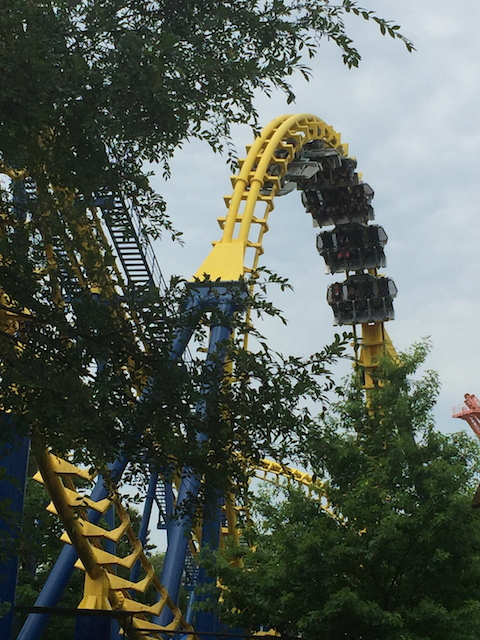
Sadly, Nighthawk wasn't nearly as good as Firehawk. It was definetly rougher. Not painful rough, but it definetly had a rattle to it that I never noticed on Firehawk.
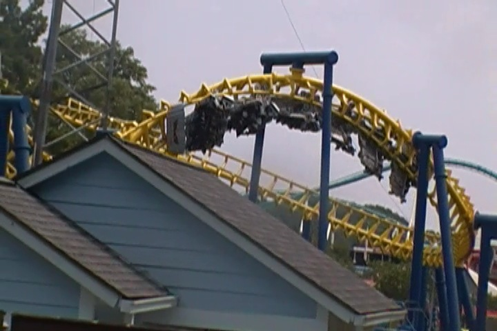
But most noticably of all, Firehawk has the inline twists whereas Nighthawk has those corkscrews, and I'm sorry, but those are really clunky, uncomfortable, and awkward. I'm really glad that Vekoma switched to the inline twists in their later designs because those work SO MUCH BETTER!!! Oh well, I still enjoyed Nighthawk.
Oh god. They have a kiddy SLC here. An old one with OTSRs. *groan* Let's just get the damn credit and leave.
They have another one of those kiddy woodies that are at most of the former-Paramount parks. And they're fun little rides. This little woodie actually has some airtime. Not a bad ride.
I know they're in the kiddy area, but if you like Flyers, do the flyers at Carowinds. These are easily, without a doubt, the best flyers I have ever done. They not only allow snapping, they freaking encourage it. And I learned that like nearly everything at an amusement park, I am TERRIBLE at snapping. I guess I'm just cursed. Oh well. I still like it. =)
That's enough kiddy crap. Let's do one of the real good rides at Carowinds.
It's a really good ride. Definetly one of the better B&M Inverts out there. Your ass is gonna be glued to your seat the whole time.
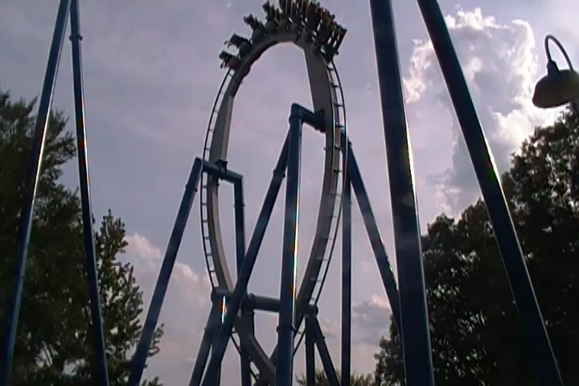
The best way for me to describe Afterburn would be that it's sort of like a Highlights Reel of Montu. Not quite as good, but it takes all the best parts of the ride, and glues them together before heading into the brake run. And considering how Montu's my favorite B&M Invert, I really enjoyed Afterburn.
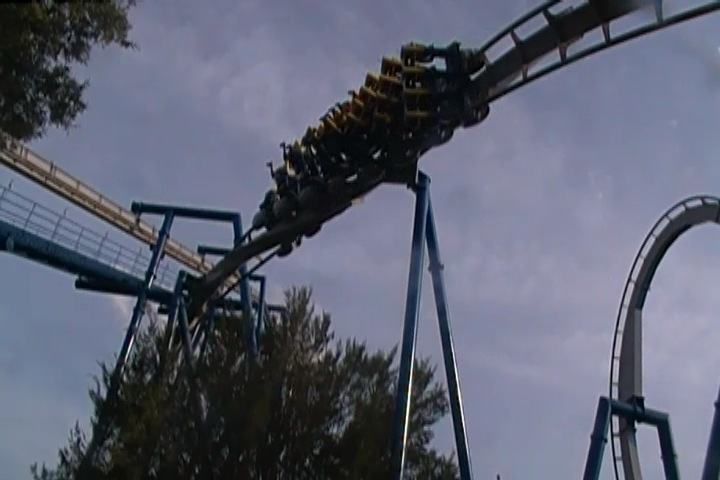
#Feel The (After)Bern!!! =)
What!? An Interactive 3-D Game Experience at a Cedar Fair park!? I'm in!! =)
Yep. The whole thing is Plants vs Zombies, and its new for 2016. I didn't even know this existed until I was at Carowinds. And I really liked it. I hope more rides like this are built in the future.
Why hasn't this evil contraption died yet?
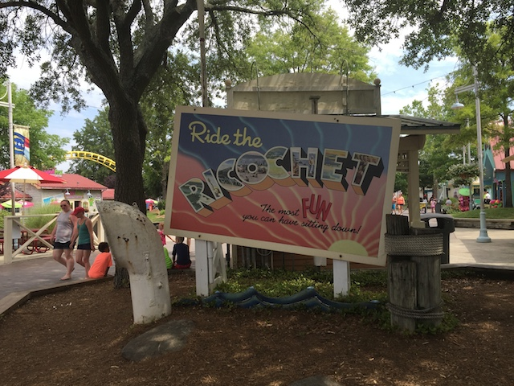
OK, carrying on with the low capacity rides, let's do their Wild Mouse.
Yeah. This wound up being our longest line of the day. Hey, crowds at Carowinds were great today.
And sadly, the Wild Mouse here was lame. Seriously, why can't all the Wild Mice be as crazy as the European Mice plus the one at Lagoon?
All right. B&M Stand Ups have problems sometimes. So let's just get this out of the way as well.
It was hard to pick which one was better. The Vortex at California's Great America or the Vortex here. I wound up giving the CA Vortex the *slight* edge since it has a pop of airtime into the brake run.
But seriously, it doesn't even really matter. Both are the two worst B&Ms. So neither are really that good. But hey, I can at least think of much worse rides than Vortex.
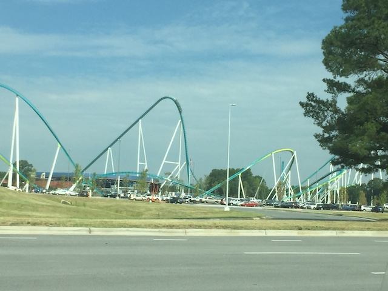
OK. I've been patient long enough. No more waiting!! It's time for Fury 325!!!
I know people were hyping the sh*t out of this ride, and I was worried about it being overrated. I'm not too crazy about their hyper coasters (most of them. Sorry, Intamin ones are better), so I was skeptical about how good a Giga Coaster from B&M would be and was worried that it'd just be Bigger Silver Star.
I'm so happy to report that I had nothing to worry about. HOLY SH*T!!! THIS RIDE IS AMAZING!!! =)
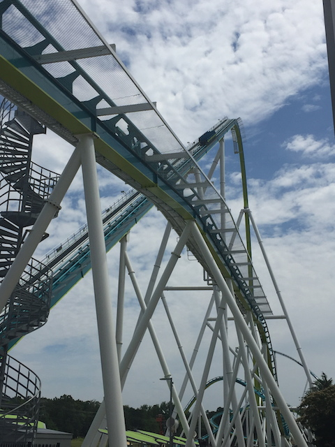
This is without a doubt, the best coaster B&M has ever built. Sorry Kumba, you've been dethroned. So yeah, this means that Fury 325 landed a spot on our Top 10 Steel Coasters List. It really is that good! =)
The first drop is amazing. Just as good as on Millenium Force. Speaking of which, this ride craps all over Millenium Force. =)
I know people will complain that all the new B&Ms suck and that they don't make them like they used to in the 1990s. And yeah, I may not be a fan of most of the 2000s B&Ms, but Fury 325 is proof that B&M can still make a kickass ride if the park desires it. Seriously, go watch this raw footage video of Fury 325 and see it in action.
Hey look! I found where everyone is! They're all at Carolina Harbor! (It looks like a fun water park, but I'm here for the roller coasters). Thanks for getting rid of all the crowds for us!
For lunch, we went outside the park and tried out this local place that was recommend to us, Pizza Fuel Cafe.
Oh, and if you're in the Deep South, make sure you try Cheerwine. It's a cherry soda that you can only get in the Deep South, and it's really good. Definetly prefer it to Cherry Coke and other similar drinks. I really hope it spreads to the West Coast.
Oh wait. There's still a B&M Hyper at Carowinds we still haven't ridden. We gotta fix that.
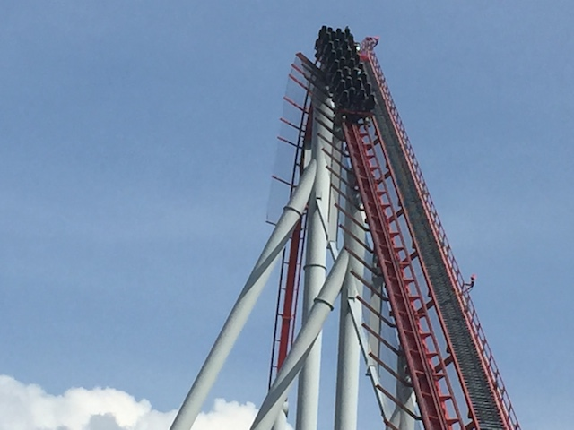
Wow. This was actually a really fun ride!! =)
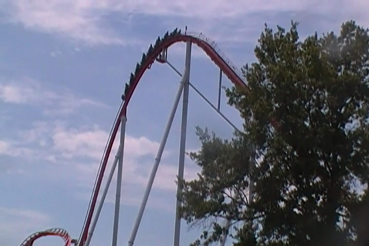
I had heard mixed things and that it was one of the weaker B&M Hypers. So I was worried. But nope. This was one of the better ones, up there with Nitro and Behemoth as far as B&M Hypers go.
It flew over all the hills and had some really nice floater air on each one of them.
Wee!! Floater Air!! =)
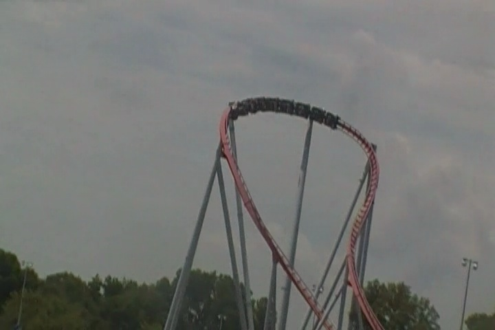
And of course, the hammerhead also has some really good laterals. That was good.
Intimidator was just a really fun hyper coaster. Very happy that Carowinds has yet another winner on their hands. Seriously, they have 3 kick-ass coasters in the park.
Hey. Let's do the Sky Tower. Time to get some ariel shots.
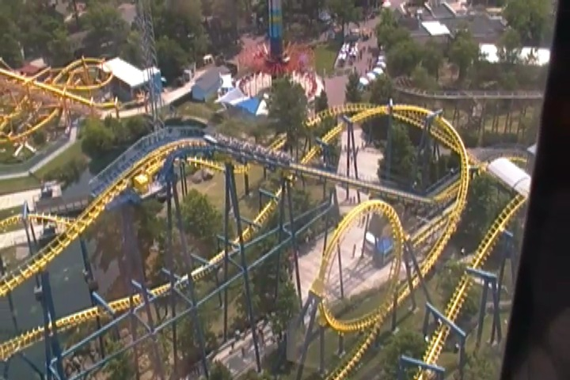
Nighthawk from the Sky Tower.
There really is as much airtime as it looks like there is. =)
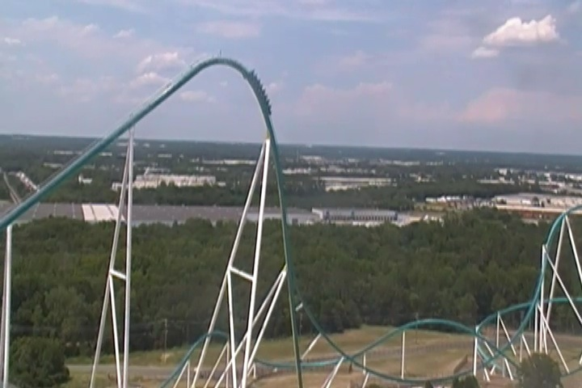
Fun fact. You can actually see the skyline of Charlotte from the top of Fury 325's lifthill (and from the Sky Tower as well). That's always cool. =)
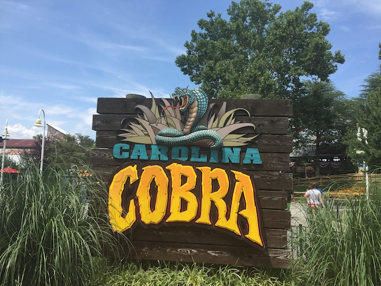
All right. We still have to do their Boomerang. Joy, we get to ride one of those this trip.
Now I actually didn't need to ride this ride since I actually got this credit when I visited Geauga Lake 9 years ago. But other people needed the credit, so I rode with them.
Now this ride actually improved from back when it was at Geauga Lake. I know it doesn't sound like much, but those new trains they added to the ride really make it much better. It went from being mediocre to actually being a really fun ride. Seriously, this is now one of the best Boomerangs I've ridden. I wish all parks would put the care and love into their Boomerangs that Carowinds put into Carolina Cobra when they adopted it from Geauga Lake.
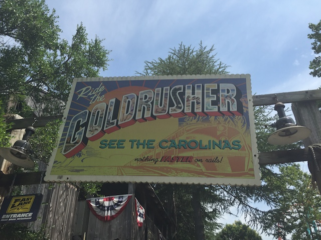
Still have to do their Mine Train. Definetly one of the better mine trains. It's like the highlights of all the non-Big Thunder Mtn or Thunderation Mine Trains. Definetly my favorite Cedar Fair Mine Train.
Yeah. They have a loopscrew here. There's actually a little bit of force to this ride. But there's also a little bit of headbanging. Meh, it's all right.
Last credit to get at the park. Oh god. I've heard such horrible things about this ride. =(
Yay! Hurler actually managed to exceed my expectations. And by exceed my expectations, I mean it was spared from my Top 10 Worst Coasters List (Seriously, I rode it expecting it to make the list).
For as sh*tty a ride it is (and it is a sh*tty ride), it actually does have a couple pops of airtime, isn't trimmed to death, and isn't painfully rough like Wild Beast.
OK, their Drop Zone was definetly smaller than I was expecting (Seriously, this is one of those puny Intamin 2nd Generation Drop Towers). But I still had fun on it.
This may look like just an ordinary Schwarzkoph Enterprise, but it's not. It's actually one of the only Schwarzkoph Enterprises ever built. And these are much better than most Enterprises. I really enjoyed it.
We even had time to see their Cirque Imagine show. And that was actually a lot of fun. They put on a really good show here. =)
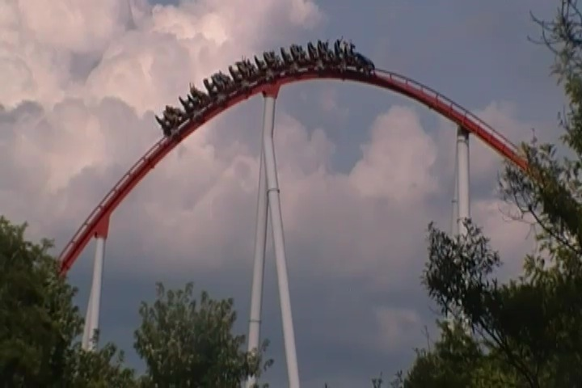
I decided to take a ride on Intimidator, and sadly, it was trimmed. Raging Bull trimmed. Suddenly, I understood why everyone else was calling this one of the weaker B&M Hypers. Cause in one afternoon, it went from being among the ranks of Behemoth and Nitro, to down towards Goliath @ La Ronde and Silver Star. I'm still a little soft on it cause I know that it can be really good. But damn it. I really hate it was trimmed, knowing how good it can be at its full potential. =(
Well at least Afterburn is never trimmed and will always kick our asses. =)
"Hey Knotts Berry Farm! I can ride Windseeker over he--Oh god!! I forgot just how boring this ride is!!!"
OK, let's go and marathon Fury 325 cause seriously, that ride is freaking unbelievable!!
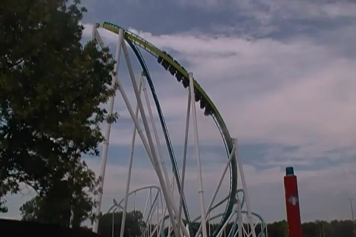
All those turns just keep the speed going, actually give it some laterals, the hills at the end have some really good ejector air, and that Treble Clef element, man is that great. =)
Seriously, Fury 325 is amazing. Not to mention it has some of the best operations ever. Seriously, the operators here were hauling ass. Two thumbs up from Incrediblecoasters. You have to get out to Carowinds and ride it. It's as good as people claim it is!! =)
And of course, we had to get our picture taken when we're both in North Carolina and South Carolina since the park straddles the border of the two states. Love that. And Carowinds is a great Cedar Fair park. Keep up the good work. I totally look foreward to coming back here.